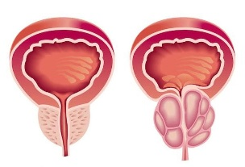
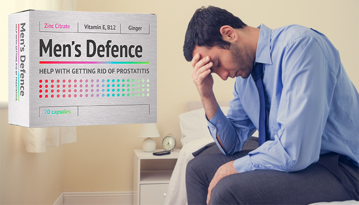
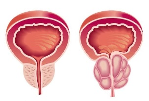
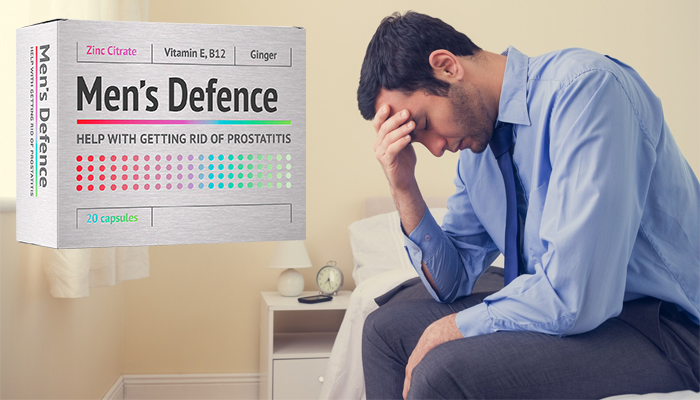

Prostatita: cauze, simptome si tratament
2020.10.01 22:57
Comunitățile DOC Accident vascular cerebral Afecțiunile glandei tiroide Afecțiunile prostatei Alergii Angină pectorală și Cardiopatie Anti-Aging Cancer de piele Cancer mamar Cancer pulmonar Colesterol-Dislipidemie Colita ulcerativă Consum Responsabil & Prevenirea Dependenței Depresie și Anxietate Diabet Dietă și Controlul greutății Durere lombară Ficatul gras Gonartroză Hepatita C Hipertensiune Infertilitate Lupus Menopauză Poliartrită reumatoidă Sarcină și bebeluși Sănătatea copilului Sănătatea dentară Sănătatea femeii Varice - Insuficiență venoasă Instrumentele doc Calculator ovulatie Calculator IMC Calculator sarcina Calculator Omega 3 Catalog medicamente Login Înregistrare Experții DOC Răspunsul Expertului Sănătate Coronavirus Medicină Medicină alternativă Sfatul DOC Știri Medicale Nutriție și sport Detoxifiere Nutriție Regim alimentar Rețete culinare Sport Știri și sfaturi în nutriție Frumusețe Modă și stil Noutăți și shopping Îngrijire și frumusețe Relații și familie Dragoste și cuplu Psihologie și dezvoltare personală Sexualitate Lifestyle Astrologie Stare de bine Timp liber Travel Experții DOC Răspunsul Expertului Sănătate Coronavirus Medicină Medicină alternativă Sfatul DOC Știri Medicale Nutriție și sport Detoxifiere Nutriție Regim alimentar Rețete culinare Sport Știri și sfaturi în nutriție Frumusețe Modă și stil Noutăți și shopping Îngrijire și frumusețe Relații și familie Dragoste și cuplu Psihologie și dezvoltare personală Sexualitate Lifestyle Astrologie Stare de bine Timp liber Travel Comunitățile DOC Instrumentele doc Follow us Termeni si conditii Contact Despre noi Recomandat DOC® © DOC 2020. All rights reserved doc.ro Afecțiunile prostatei Despre prostată Prostatita: cauze, simptome si tratament Afecțiunile prostatei Despre prostată
Prostatita: cauze, simptome si tratament
Prostatita consta in inflamarea prostatei, adica a glandei situate exact sub vezica urinara a barbatului. Glanda prostata are rolul de a produce lichidul care transporta spermatozoizii. Autor: Dr. Ruxandra Dumitrescu , Medic Primar Obstetrică Ginecologie, Expert DOC Descriere:Dr. Ruxandra Dumitrescu este medic primar obstetrică ginecologie, cu supraspecializare în tratamentul infertilității cuplului, competență în laparoscopie, histeroscopie, ecografie în obstetrică ginecologie, dar și competență în medicină materno fetală.
Prostatita: cauze, simptome si tratament
1. Despre prostatita – informatii generale
● Ce este prostatita
● Tipuri de prostatita
TE-AR MAI PUTEA INTERESA● Cauze prostatita
● Factori de risc prostatita
● Simptome prostatita
● Complicatii prostatita
● Diagnosticarea prostatitei
2. Cum se trateaza prostatita
3. Prevenirea prostatitei
Despre prostatita – informatii generale
Prostatita consta in inflamarea prostatei, adica a glandei situata exact sub vezica urinara a barbatului. Glanda prostata are rolul de a produce lichidul care transporta spermatozoizii. Prostatita cauzeaza adesea disconfort si durere la urinare. Aceasta afectiune poate aparea la orice varsta, insa, in general, afecteaza barbatii de peste 50 de ani. In functie de cauzele sale, prostatita poate sa aiba un debut brusc sau poate sa apara treptat. Aceasta poate sa fie tratata rapid, insa totodata poate sa persiste pentru perioade indelungate ori poate reveni la un anumit interval de timp.
Ce este prostatita
Prostata este o glanda cu dimensiunile unei nuci, amplasata sub vezica urinara a barbatului, care face parte din sistemul reproducator masculin. Prostatita este afectiunea caracterizata de inflamatia acestei glande. Printre simptomele acestei afectiuni se numara disconfortul la urinare si nevoia frecventa de a urina. In functie de cauza ei, prostatita poate aparea brusc sau se poate instala treptat. Aceasta se poate ameliora de la sine sau poate necesita tratament. Uneori, prostatita persista mai multe luni sau revine frecvent – in aceasta situatie vorbim despre prostatita cronica.
Tipuri de prostatita
Exista 4 tipuri de prostatita, fiecare avand cauze si tratament diferite.
Prostatita acuta bacteriana
Daca ajung bacterii la nivelul prostatei, apare prostatita bacteriana, care are un debut brusc si se manifesta prin simptome precum urinari frecvente, diconfort si durere in timpul mictiunii, dar si febra, frisoane, dureri musculare si articulare ori jet slab al urinei. Aceasta afectiune este una severa si necesita tratament pe baza de antibiotice. Barbatul care sufera de aceasta forma de prostatita trebuie sa mearga urgent la medic.
Prostatita cronica bacteriana
Aceasta forma de prostatita este mai frecventa in randul varstnicilor. Este mai blanda decat cea bacteriana acuta, insa poate persista luni la rand. De multe ori, barbatii au de-a face cu o asemenea prostatita dupa o infectie a tractului urinar .
Prostatita cronica/ sindromul durerii cronice pelvine
Cea mai frecventa forma de prostatita, cea cronica se aseamana cu prostatita bacteriana, insa analizele nu depisteaza nicio bacterie. Nu se cunosc cauzele acestui tip de prostatita.
Prostatita inflamatorie asimptomatica
Prostatita inflamatorie asimptomatica este un tip de prostatita care nu prezinta simptome, desi glanda este inflamata. Aceasta este depistata in timpul analizelor si testelor care verifica functiile prostatei. Nu necesita tratament, insa poate cauza infertilitate .
Cauze prostatita
Cauzele prostatitei difera in functie de tipul acesteia. De pilda, prostatita bacteriana este cauzata de infectia cu o bacterie. Aceasta bacterie poate ajunge la nivelul prostatei calatorind din tractul urinar. Si raporturile sexuale neprotejate pot cauza prostatita prin expunerea la bacterii cu transmitere sexuala precum Chlamydia.
Pe de alta parte, prostatita cronica are cauze necunoscute. Aceasta poate fi asociata cu activitatea sistemului imunitar sau cu daune produse in zona pelviana.
Factori de risc prostatita
Cu toate ca orice barbat poate avea de-a face cu prostatita, exista unii mai expusi acestui risc.
Varsta
Barbatii cu varsta cuprinsa intre 30 si 50 de ani sunt mai expusi riscului de prostatita.
Infectie la nivelul vezicii urinare
Infectiile urinare cresc, de asemenea, riscul de prostatita bacteriana, asta pentru ca bacteriile pot ajunge la prostata.
Traumatisme in zona pelviana
Traumatismele in zona pelviana, mai ales cele din timpul unor activitati precum mersul pe bicicleta sau calaritul, pot mari predispozitia pentru prostatita.
Infectia cu HIV
Infectia cu virusul HIV creste, de asemenea, riscul de prostatita.
Biopsia la nivelul prostatei
Dupa o biopsie a prostatei, pacientul este mai expus riscului de a face prostatita.
Simptome prostatita
Prostatita se manifesta printr-o serie de simptome, insa multe dintre acestea pot fi asociate si cu alte boli ale prostatei – adenomul de prostata , cancerul prostatic. De aceea, este important consultul urologic, care va determina daca manifestarile sunt specifice prostatitei sau au alta cauza.
Durere, usturime sau disonfort la urinare
Senzatiile naplacute la urinare apar din cauza ca prostata este inflamata.
Urinari frecvente, chiar si pe timpul noptii
Intrucat prostata este mai mare din cauza inflamatiei, aceasta apasa pe uretra si vezica, ceea ce inseamna ca pacientul are mai des nevoie la toaleta, chiar si in timpul noptii.
Sange in urina
Sangele in urina poate fi, de asemenea, asociat cu prostatita.
Durere in zona abdominala sau lombara
Inflamatia glandei prostata poate declansa si dureri in zona abdominala, mai ales in partea inferioara a acesteia, precum si in zona lombara.
Durere in zona perineului
Zona perineului poate deveni si ea dureroasa pe fondul prostatitei.
Durere/ disonfort la nivelul penisului ori testiculelor
Prostatita poate declansa dureri in zona penisului, testiculelor si chiar si in regiunea anala.
Ejaculare dureroasa
La pacientul care sufera de prostatita, ejacularea poate deveni dureroasa.
Simptome specifice gripei
Daca este vorba despre o prostatita bacteriana, pot aparea si simptome specifice gripei precum febra, frisoanele, starea generala de rau.
Complicatii prostatita
Daca este lasata netratata, prostatita poate avea complicatii.
Infectie in sange – bacteriemie
Prezenta unei infectii bacteriene in sange, adica bacteriemia, poate fi o complicatie a prostatitei netratate corespunzator.
Epididimita (n.r. inflamatia epididimului, adica a tulbului din spatele testiculelor)
Si inflamarea epididimului poate fi o consecinta a prostatitei persistete, netratate corespunzator.
Abcesul prostatei
In unele cazuri, prostatita poate determina aparitia unui abces la nivelul acestei glande.
Infertilitate
Calitatea spermei poate fi afectata de prostatita, de aceea infertilitatea este un pericol la care e expus pacientul care sufera de aceasta afectiune.
Diagnosticarea prostatitei
Diagnosticarea prostatitei se face in urma excluderii altor afectiuni care au aceleasi manifestari – adenomul de prostata, cancerul de prostata. In prima faza, medicul va face anamneza si examinarea fizica, apoi va continua cu o serie de teste si analize.
Analizele de urina
Analizele de urina se fac pentru a se observa daca exista semne ale unei infectii in organism.
Analizele de sange
Si analizele de sange urmaresc tot depistarea unor semne ale infectiei in organism.
Tuseul rectal
Tuseul rectal consta in examinarea manuala a prostatei, prin rect, facuta de catre medic cu degetul. Aceasta metoda de diagnosticare permite medicului sa observe daca prostata este marita, dar si daca exista formatiuni atipice la nivelul acesteia ori daca textura glandei este anormala.
Testele imagistice
Tomografia computerizata poate fi facuta pentru ca medicul sa obtina imagini mai detaliate ale prostatei.
Citeste si Totul despre afectiunile prostateiCum se trateaza prostatita
Tratamentul pentru prostatita este ales in functie de tipul bolii si de cauzele acesteia.
Tratamentul cu antibiotice pentru prostatita
Antibioticele sunt folosite pentru tratarea prostatitei bacteriene. Daca simptomele sunt severe, pacientul poate avea nevoie de antibiotice administrate intravenos.
Tratamentul cu alfa blocante pentru prostatita
Medicamentele alfa-blocante contribuie la relaxarea vezicii urinare si a muschilor dintre prostata si vezica urinara. Acest tratament amelioreaza simptomele neplacute.
Tratamentul cu medicamente antiinflamatoare pentru prostatita
Medicamentele antiinflamatoare pot ameliora, de asemenea, manifestarile prostatitei, indiferent de cauza acesteia.
Modificari ce tin de stilul de viata, recomandate pacientilor cu prostatita
Pacientul care sufera de prostatita ar trebui sa isi adapteze stilul de viata, astfel incat sa amelioreze manifestarile acestei afectiuni. In primul rand, pacientul trebuie sa renunte pentru o perioada macar la echitatie si ciclism. Apoi, acesta ar trebui sa limiteze consumul de cofeina si pe cel de alcool. Si mancarurile picante ar trebui ocolite, intrucat acestea accentueaza simptomele neplacute precum disconfortul si usturimile la urinare.
Consumul de lichide ar trebui restrictionat seara, inainte de culcare, astfel incat pe timpul noptii sa nu apara nevoia frecventa de urinare. Totusi, in timpul zilei pacientul trebuie sa se hidrateze foarte bine, mai ales daca sufera de prostatita bacteriana si trebuie sa elimine bacteriile care se regasesc la nivelul tractului urinar.
Se pot folosi baile de sezut, dar si compresele calde aplicate local, pentru ameliorarea simptomelor neplacute specifice prostatitei.
Remedii naturiste pentru prostatita
Nu exista nicio dovada stiintifica care sa confirme faptul ca remediile naturiste pot fi eficiente in ameliorarea simptomelor prostatitei, insa multi barbati le folosesc si se declara multumiti.
Ceaiurile din planta de coada calului, dar si cele din radacina de urzica sunt folosite pentru calmarea simptomelor specifice prostatitei.
Propolisul este si el folosit pentru tratarea bolilor prostatei, fie ca vorbim despre prostatita, fie ca este vorba despre hiperplazia benigna de prostata (n.r. prostata marita).
Uleiul de dovleac sau semintele de dovleac pot fi, de asemenea, de ajutor in tratarea bolilor prostatei.
Quercetina, care se regaseste in ceapa si alte plante, este si ea folosita pentru ameliorarea manifestarilor prostatitei, indiferent de forma acesteia.
Prevenirea prostatitei
Nu exista nicio metoda 100% eficienta in prevenirea prostatitei. Insa evitarea contactului sexual neprotejat, hidratarea corespunzatoare, dieta echilibrata si sportul pot reduce riscul de prostatita si de alte boli ale prostatei.
Este foarte important ca barbatul sa mearga la un control urologic imediat ce observa simptome precum cele enumerate mai sus. De asemenea, dupa implinirea varstei de 50 de ani, controalele urologice anuale sunt recomandate, astfel incat sa se depisteze din timp daca exista boli ale acestei glande.
TE-AR MAI PUTEA INTERESA
Sursa foto: Shutterstock
Pentru a comenta este nevoie de autentificare sau înregistrare . Comentarii 0 Comentariul a fost adăugat în lista de aprobarePentru a putea adăuga întrebări sau comentarii trebuie să ai cont
Intră în cont DOC.roCont nou
Login
Înregistrează-te
Vă mulțumim!
Cererea de înregistrare a fost trimisa cu succes. Pentru a finaliza creearea contului pe acest website te rugam să intri pe adresa de email înscrisă în formular și să confirmi potrivit instrucțiunilor din mailul pe care îl vei primi din partea noastră.
În funcție de providerul tău de email mesajul de confirmare poate ajunte într-un interval de până la 30 de minute. vă rugam verificați și folderul Spam/Junk mail.
Așteptați ...Aboneazã-te acum la newsletterul DOC pentru a fi la curent cu cele mai noi articole și sfaturi pentru sănătatea ta.
Abonarea a fost făcută cu success. Va rugăm accesați emailul pentru confirmare Este necesară acceptarea termenilor și condițiilor Experții DOC Răspunsul Expertului Sănătate Coronavirus Medicină Medicină alternativă Sfatul DOC Știri Medicale Nutriție și sport Detoxifiere Nutriție Regim alimentar Rețete culinare Sport Știri și sfaturi în nutriție Frumusețe Modă și stil Noutăți și shopping Îngrijire și frumusețe Relații și familie Dragoste și cuplu Psihologie și dezvoltare personală Sexualitate Lifestyle Astrologie Stare de bine Timp liber Travel Recomandarea Experților Social media Termeni si conditii Contact Despre noi Recomandat DOC® © DOC 2020. All rights reserved Consulta un specialist Bine ati venit pe doc.ro. Cu ce va pot ajuta ? hey- Prostatita - tratament naturist - SanatateCuPlante
- Prostatita: Generalitati, Factori de risc si Tratament
- PROSTATA - Perne pentru hemoroizi, afectiuni anale, dureri ...
- Prostata: cele mai comune boli ale acesteia si ...
- Prostatita acută - cauze, simptome, diagnostic şi ...
- Prostatia cronica - Actinmed
- Adevărul despre Prostero – preț, păreri, forum, prospect ...
- Prostatita | Prostenal
- Prostatita - medicover.ro
- PROSTATITELE - rasfoiesc.com
- Prostatita - tratament naturist - SanatateCuPlante
Prostatita acuta este o infectie a prostatei si poate reprezenta o problema grava de sanatate in randul barbatilor. Prostata este un organ vecin vezicii urnare, o glanda a aparatului urogenital masculin. Mai exact, este zona de intersectie intre calea genitala si cea urinara. Rolul prostatei este de a produce o parte din lichidul seminal si de a activa spermatozoizii prin alcalinizarea ...
- Prostatita: Generalitati, Factori de risc si Tratament
Prostatita subacuta..Intrebare :) » Secțiunea: Forum medical...la un control la medic si mi-a gasit o prostatita subacuta. Mi-a prescris asa :Augmentin 1/12 ore, Flamexin 2 plicuri /zi dupa mese si Tinizol 4 pastile azi si ...ore alte 4.
- PROSTATA - Perne pentru hemoroizi, afectiuni anale, dureri ...
Prostatita - Mecanism fiziopatologic. Prostatita, in special cea care are perioade lungi simptomatice, poate cauza stress, anxietate sau depresie. Barbatii cu prostatita acuta bacteriana au durere de intensitate crescuta si pot necesita spitalizare. Majoritatea se vindeca in urma terapiei cu antibiotice.
- Prostata: cele mai comune boli ale acesteia si ...
Prostatita consta in inflamarea prostatei, adica a glandei situata exact sub vezica urinara a barbatului. Glanda prostata are rolul de a produce lichidul care transporta spermatozoizii. Prostatita cauzeaza adesea disconfort si durere la urinare. Aceasta afectiune poate aparea la orice varsta, insa ...
- Prostatita acută - cauze, simptome, diagnostic şi ...
Prostatita (inflamație sau o infecție a prostatei) este o boală complexă, ce poate avea multe modalități de manifestare. Spre deosebire de majoritatea problemelor legate de prostată, prostatita apare mai frecvent la bărbații tineri și de vârsta a doua.
- Prostatia cronica - Actinmed
Prostatita acuta bacteriana este tratata cu antibiotice, medicamente pentru febra (antipiretice) si durere (antialgige), administrare de fluide si odihna. In cazul in care urinarea nu este posibila sau in cazul in care este necesara terapia intavenoasa cu antibiotice, se indica internarea in spital.
- Adevărul despre Prostero – preț, păreri, forum, prospect ...
Prostatita este o inflamatie a glandei prostatei. Exista multe forme de prostatita, dar vom insista pe doua dintre ele: acute si cronice.Prostatita acuta – este de fapt perioada de debut a afectiunii.Prostatita cronica apare in cazul in care oamenii tolereaza afectiunea fara a apela la medic si in termen de 3-6 luni prostatita intra in faza cronica.
- Prostatita | Prostenal
Prostatita inflamatorie asimptomatica (prostatita histologica) prostatita acuta. etiopatogenie: apare datorita infectarii prostatei cu diversi germeni: Escherichia Coli, Klebsiella, Proteus, Enterobacter, Piocianic, mai rar Stafilococul auriu si Enterococul, Chlamydia sau anaerobi ca diverse specii de Bacterioides.
- Prostatita - medicover.ro
Prostatita cronică bacteriană. Prostatita cronică bacteriană este cauzată tot de infecția bacteriană, dar diferă de prostatita acută bacteriană prin faptul că prostatita cronică bacteriană persistă mai mult de trei luni, iar intervalul de timp în care aceasta se instalează este mai mare. Prostatita cronică bacteriană afectează mai frecvent bărbații între 35 și 50 ani.
- PROSTATITELE - rasfoiesc.com
Prostatita acută bacteriană generează, în schimb, simptome foarte severe, ce au nevoie de îngrijire medicală imediată, pentru a evita apariția complicațiilor. Este important de reținut faptul că există și cazuri în care prostatita nu prezintă nici un fel de simptom. În aceste situații boala poate fi diagnosticată atunci când ...
Prostatita acuta este o infectie a prostatei si poate reprezenta o problema grava de sanatate in randul barbatilor. Prostata este un organ vecin vezicii urnare, o glanda a aparatului urogenital masculin. Mai exact, este zona de intersectie intre calea genitala si cea urinara. Rolul prostatei este de a produce o parte din lichidul seminal si de a activa spermatozoizii prin alcalinizarea ...
Prostatita subacuta..Intrebare :) » Secțiunea: Forum medical...la un control la medic si mi-a gasit o prostatita subacuta. Mi-a prescris asa :Augmentin 1/12 ore, Flamexin 2 plicuri /zi dupa mese si Tinizol 4 pastile azi si ...ore alte 4.
Prostatita - Mecanism fiziopatologic. Prostatita, in special cea care are perioade lungi simptomatice, poate cauza stress, anxietate sau depresie. Barbatii cu prostatita acuta bacteriana au durere de intensitate crescuta si pot necesita spitalizare. Majoritatea se vindeca in urma terapiei cu antibiotice.
Prostatita consta in inflamarea prostatei, adica a glandei situata exact sub vezica urinara a barbatului. Glanda prostata are rolul de a produce lichidul care transporta spermatozoizii. Prostatita cauzeaza adesea disconfort si durere la urinare. Aceasta afectiune poate aparea la orice varsta, insa ...
Prostatita (inflamație sau o infecție a prostatei) este o boală complexă, ce poate avea multe modalități de manifestare. Spre deosebire de majoritatea problemelor legate de prostată, prostatita apare mai frecvent la bărbații tineri și de vârsta a doua.
Prostatita acuta bacteriana este tratata cu antibiotice, medicamente pentru febra (antipiretice) si durere (antialgige), administrare de fluide si odihna. In cazul in care urinarea nu este posibila sau in cazul in care este necesara terapia intavenoasa cu antibiotice, se indica internarea in spital.
Prostatita este o inflamatie a glandei prostatei. Exista multe forme de prostatita, dar vom insista pe doua dintre ele: acute si cronice.Prostatita acuta – este de fapt perioada de debut a afectiunii.Prostatita cronica apare in cazul in care oamenii tolereaza afectiunea fara a apela la medic si in termen de 3-6 luni prostatita intra in faza cronica.
Prostatita inflamatorie asimptomatica (prostatita histologica) prostatita acuta. etiopatogenie: apare datorita infectarii prostatei cu diversi germeni: Escherichia Coli, Klebsiella, Proteus, Enterobacter, Piocianic, mai rar Stafilococul auriu si Enterococul, Chlamydia sau anaerobi ca diverse specii de Bacterioides.
Prostatita cronică bacteriană. Prostatita cronică bacteriană este cauzată tot de infecția bacteriană, dar diferă de prostatita acută bacteriană prin faptul că prostatita cronică bacteriană persistă mai mult de trei luni, iar intervalul de timp în care aceasta se instalează este mai mare. Prostatita cronică bacteriană afectează mai frecvent bărbații între 35 și 50 ani.
Prostatita acută bacteriană generează, în schimb, simptome foarte severe, ce au nevoie de îngrijire medicală imediată, pentru a evita apariția complicațiilor. Este important de reținut faptul că există și cazuri în care prostatita nu prezintă nici un fel de simptom. În aceste situații boala poate fi diagnosticată atunci când ...
 


